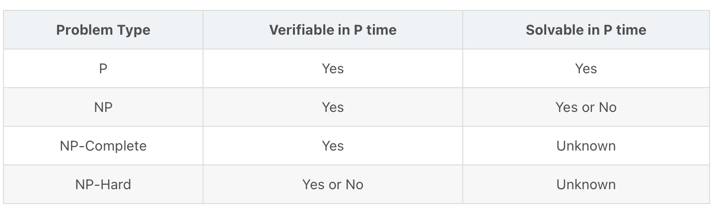
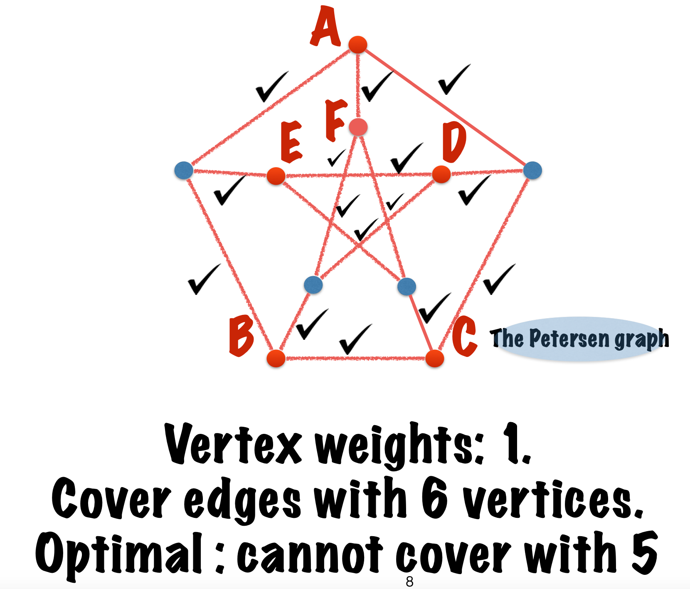
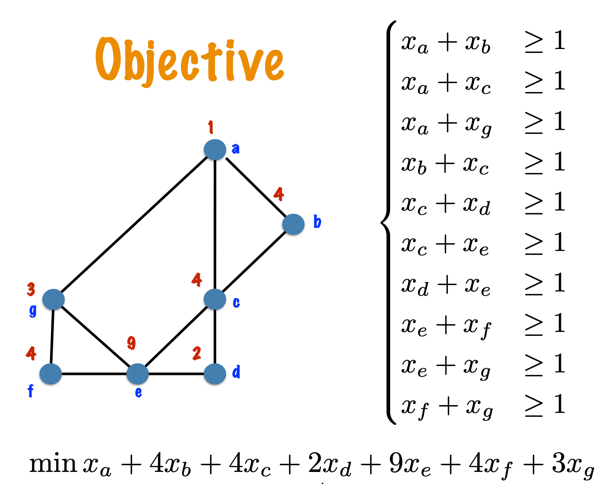

Approximation Algorithms Week 1--Vertex cover and Linear Programmng
课程来自Coursera
前置知识
关于组合优化问题
应用于安排课程、计划运输路线等一系列\(NP-hard\)问题（没有多项式时间的解）
解决\(NP-hard\)问题的方法：
- 限制算法是多项式时间的
- 放弃寻找最优解，而是去寻找足够好的解。
- 对于现实中复杂的问题，研究其理想化的版本。
P问题、NP问题、NPC问题
多项式时间（polynomial time）：可用多项式表示的时间复杂度，如\(O(1)\)、\(O(\log N)\)、\(O(N^2)\)
约化(Reducibility)：问题\(A\)可以约化为问题\(B\)，即用问题\(B\)的方法解决问题\(A\)，此约化是多项式的。例：用求解一元一次方程的方法约化为求解一元二次方程的方法。
\(P\)问题：一类可在多项式时间内解决的问题的集合。
\(NP\)问题：一类问题，此类问题可在多项式时间内验证。
\(NP-Complete\)问题：一类问题\(X\)，任意\(NP\)问题\(Y\)都可以在多项式式时间内约化为问题\(X\)。
证明一个问题是\(NPC\)问题：
- 此问题为\(NP\)问题
- 一个已知的\(NPC\)问题可以约化为此问题
Pick all the correct statements.If a problem \(H\) is \(NP-Complete\), then...
☑For any problem \(L\) in \(NP\), there is a polynomial-time reduction from \(L\) to \(H\).
☑For any problem \(L\) in \(P\), there is a polynomial-time reduction from \(L\) to \(H\).
☐\(H\) belongs to the class \(P\).
☑\(H\) belongs to the class \(NP\).
☑If there exists a polynomial-time algorithm for the Hamiltonian path problem then there exists a polynomial-time algorithm for \(H\).
☑An output to problem H is either "yes" or "no".
☑If there exists a polynomial-time algorithm for H then there exists a polynomial-time algorithm for the Hamiltonian path problem.
\(NP-Hard\)问题：一类问题所组成的集合，此类问题的范围比\(NPC\)问题广，不一定为决策问题，不包含于\(NP\)问题。任何\(NPC\)问题可在多项式时间内约化为\(NP-Hard\)问题。
Pick all the correct statements.If a problem \(H\) is \(NP-Hard\), then...
☑For any problem \(L\) in \(P\), there is a polynomial-time reduction from \(L\) to \(H\).
☐\(H\) belongs to the class \(P\).
☐\(H\) belongs to the class \(NP\).
☑If there exists a polynomial-time algorithm for \(H\) then there exists a polynomial-time algorithm for the Hamiltonian path problem.
☐If there exists a polynomial-time algorithm for the Hamiltonian path problem then there exists a polynomial-time algorithm for \(H\).
☐An output to problem \(H\) is "yes" or "no".
☑For any problem \(L\) in \(NP\), there is a polynomial-time reduction from \(L\) to \(H\).


The Vertex cover problem
Problem Dedinition
- 最小点覆盖，即给出一个无向图，求一个最小的点集\(S\)，使得每条边都至少有一个顶点在这个点集里。
- Example:

- \(proof\)：此图不可被五个点的集合覆盖
- 此图的外部由一个五边形构成，一个五边形的覆盖集至少含有三个点；此图的内部由一个五角星构成，五角星是另一种形式的五边形，它的覆盖集也至少包含三个点。因此这个图的覆盖集至少包含六个顶点。
An Integer program for vertex cover
三部分：变量、约束、目标
变量： \[ \left\{x_u \mid u \in V\right\} \]
约束： \[ \begin{gathered} \forall u \in V: x_u=0 o r 1 \\ \forall\{u, v\} \in E: x_u+x_v \geq 1 \end{gathered} \]
目标：\(min \sum_u w_u x_u\)
例：

A linear programming relaxation
- Integer program模型
\[ \begin{aligned} & \min c_1 x_1+c_2 x_2+\cdots+c_n x_n \\ & \begin{cases}a_{11} x_1+a_{12} x_2+\cdots+a_{1 n} x_n & \geq b_1 \\ a_{21} x_1+a_{22} x_2+\cdots+a_{2 n} x_n & \geq b_2 \\ \cdots & \\ a_{m 1} x_1+a_{m 2} x_2+\cdots+a_{m n} x_n & \geq b_m \\ \forall i: \quad 0 \leq x_i \leq 1 & \\ \forall i: \quad x_i \text { integer }\end{cases} \\ & \end{aligned} \]
- Integer program是\(NP-Hard\)问题
- linear program模型
$$
linear program是多项式时间可解的问题
因为linear program模型的求解速度优于Integer program，因此设计出vertex cover问题的linear program
变量： \[ \left\{x_u \mid u \in V\right\} \]
约束： \[ \begin{aligned} & \forall u \in V: 0 \leq x_u \leq 1 \\ & \forall\{u, v\} \in E: x_u+x_v \geq 1 \end{aligned} \]
目标：\(min \sum_u w_u x_u\)
vertex cover问题的近似算法（1）
思想：在此问题的整数规划的基础上允许\(x_u\)不为整数，但需要满足\(0 \leq x_u \leq 1\)，即首先求得线性规划的解\(x_u^*\)，再通过某种变换得到整数规划的解\(z_u\)
转化：对\(x_u^*\)进行四舍五入 \[ z_u= \begin{cases}1 & \text { if } x_u^* \geq 0.5 \\ 0 & \text { otherwise }\end{cases} \]
正确性证明：由于线性规划得到的解满足\(x_u^*+x_v^* \geq 1\)，则必有\(x_u^*\geq 0.5\)或\(x_v^*\geq 0.5\)，所以\(x_u\geq 1或x_v\geq 1\)，满足\(x_u+x_v \geq 1\)的条件，因此该算法得到的点集属于点覆盖。
近似比证明：
- 首先（1）当\(x_u^*\geq 1/2\)时，\(z_u=1\)（2）\(x_u^*\leq 1/2\)时，\(z_u=0\)，可以得到\(z_u\leq2x_u^*\)。又因为\(x^*\)是对原整数规划放宽约束所得到的最优解，因此\(\sum_{\mathbf{u}} \mathbf{w}_{\mathbf{u}} \mathbf{x}_{\mathbf{u}}^* \leq \mathrm{OPT}\)。综上，\(\sum_{\mathbf{u}} \mathbf{w}_{\mathbf{u}} \mathbf{z}_{\mathbf{u}} \leq 2\sum_{\mathbf{u}} \mathbf{w}_{\mathbf{u}} \mathbf{x}_{\mathbf{u}}^* \leq 2\mathrm{OPT}\)，近似比为2。
算法的紧性：求正八边形的最小覆盖集。
Half integrality定理证明
定理：对于vertex cover问题的线性规划算法，一定存在某个最优解\(x_i\)，任意\(x_i\)满足\(x_i \in\left\{0, \frac{1}{2}, 1\right\}\).(Half Integrality)
\(proof\):
思想：证明任意最优解可以在多项式时间内调整为上面的形式
设vertex cover问题线性规划的最优解为\(\{x_i\}\)，取足够小的\[\epsilon\]构造新的解\(\{y_i\}\)和\(\{z_i\}\): \[ y_i=\left\{\begin{array}{lr} x_i, & x_i \in\{0,0.5,1\} \\ x_i+\epsilon, & 0<x_i<0.5 \\ x_i-\epsilon, & 0.5<x_i<1 \end{array}\right. \]
\[ z_i=\left\{\begin{array}{lr} x_i, & x_i \in\{0,0.5,1\} \\ x_i-\epsilon, & 0<x_i<0.5 \\ x_i+\epsilon, & 0.5<x_i<1 \end{array}\right. \]
回顾LP问题的约束条件： \[ \begin{aligned} & \forall u \in V: 0 \leq x_u \leq 1 \\ & \forall\{u, v\} \in E: x_u+x_v \geq 1 \end{aligned} \] 观察构造的解，发现\(\{y_i\}\)和\(\{z_i\}\)均满足线性规划的约束，属于可行解。
由于\(\{x_i\}\)是最优解，所以有\(\sum w_i x_i \leq \sum w_i y_i, \sum w_i x_i \leq \sum w_i z_i\)
又有\(\sum w_i y_i+\sum w_i z_i=2 \sum w_i x_i\)
因此\(\sum w_i x_i=\sum w_i y_i=\sum w_i z_i\)，即\(\{y_i\}\)和\(\{z_i\}\)也是最优解
考虑\(\epsilon>0\)不断增大，直到将不属于\(\{0, \frac{1}{2}, 1\}\)的变量变到此区间之间。若变量已经属于区间\(\left\{0, \frac{1}{2}, 1\right\}\)，将不会再改变，因此对变量进行的松弛操作是多项式时间的。
vertex cover问题的近似算法（2）
考虑一类特殊的图\(G\)：四染色图，即用4种颜色来对\(G\)的顶点进行染色，使得构成每一条边\((u,v)\)的两个顶点颜色不同。
对4-染色图的近似算法：
- step1：将图\(G\)进行4-染色
- step2：对\(G\)进行线性规划，得到解\(\{x_i\}\)，对解进行改造使其满足\(x_i \in\left\{0, \frac{1}{2}, 1\right\}\)。
- step3：令\(S=\emptyset\)，\(S=S\cup\{v|x_v=1\}\).
- step4：将\(\{v|x_v=1/2\}\)按照颜色进行分类，经过排序，得到\(V_0^{\frac{1}{2}}, V_1^{\frac{1}{2}}, V_2^{\frac{1}{2}}, V_3^{\frac{1}{2}}\)，满足\(\left|V_0^{1 / 2}\right| \leq\left|V_1^{1 / 2}\right| \leq\left|V_2^{1 / 2}\right| \leq\left|V_3^{1 / 2}\right|\)。
- step5：\(S=S\cup\{V_0^{\frac{1}{2}}\}\cup\{V_1^{\frac{1}{2}}\}\cup\{V_2^{\frac{1}{2}}\}\)，\(S\)为算法的解。
算法近似比证明：
\(proof\)：
vertex cover问题线性规划模型的目标值 \[ val(X)=\sum_u w_u x_u=\frac{1}{2} \left|V^{\frac{1}{2}}\right|+\left|V^1\right| \]
由于\(\left|V_0^{1 / 2}\right| \leq\left|V_1^{1 / 2}\right| \leq\left|V_2^{1 / 2}\right| \leq\left|V_3^{1 / 2}\right|\)，\(\left|V_3^{\frac{1}{2}}\right| \geq \frac{1}{4} \left|V^{\frac{1}{2}}\right|\)
因此\(\left|V_0^{\frac{1}{2}}\right|+\left|V_1^{\frac{1}{2}}\right|+\left|V_2^{\frac{1}{2}}\right| \leq \frac{3}{4} \left|V^{\frac{1}{2}}\right|\)
则 \[ \begin{aligned} \left|S\right|&=\left|V^1\right|+\left|V_0^{\frac{1}{2}}\right|+\left|V_1^{\frac{1}{2}}\right|+\left|V_2^{\frac{1}{2}}\right| \\ &\leq \frac{3}{4} \left|V^{\frac{1}{2}}\right|+\left|V^1\right| \\ &\leq \operatorname{val}(X)+\frac{1}{4} \left|V^{\frac{1}{2}}\right|+\frac{1}{2}\left|V^1\right| \\ &= \frac{3}{2} \operatorname{val}(X) \end{aligned} \]
最终可得 \[ |S| \leq \frac{3}{2} \operatorname{val}(x) \leq \frac{3}{2} O P T \]
算法的正确性：
- \(proof\):
- 由于对于任意边\(e(u,v)\)，\(x_u+x_v \geq 1\)，\(x_i \in\left\{0, \frac{1}{2}, 1\right\}\)，考虑三种情形：
- (1)若\(x_u,x_v\)中有一个为1，则该点在\(S\)中，此边被覆盖；
- (2)若\(x_u,x_v\)中有一个为0，则令一个为1，此边被覆盖；
- (3)若\(x_u=x_v=1/2\)，因为两点共同构成一条边，所以颜色不同，不会都在\(\left|V_3^{1 / 2}\right|\)中，因此两点中至少有一个点在\(S\)中，从而此边被覆盖。
- 综上，算法所得到\(S\)是图\(G\)的覆盖集。
- \(proof\):